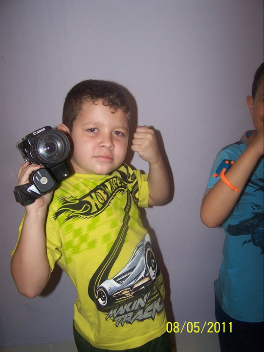
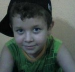
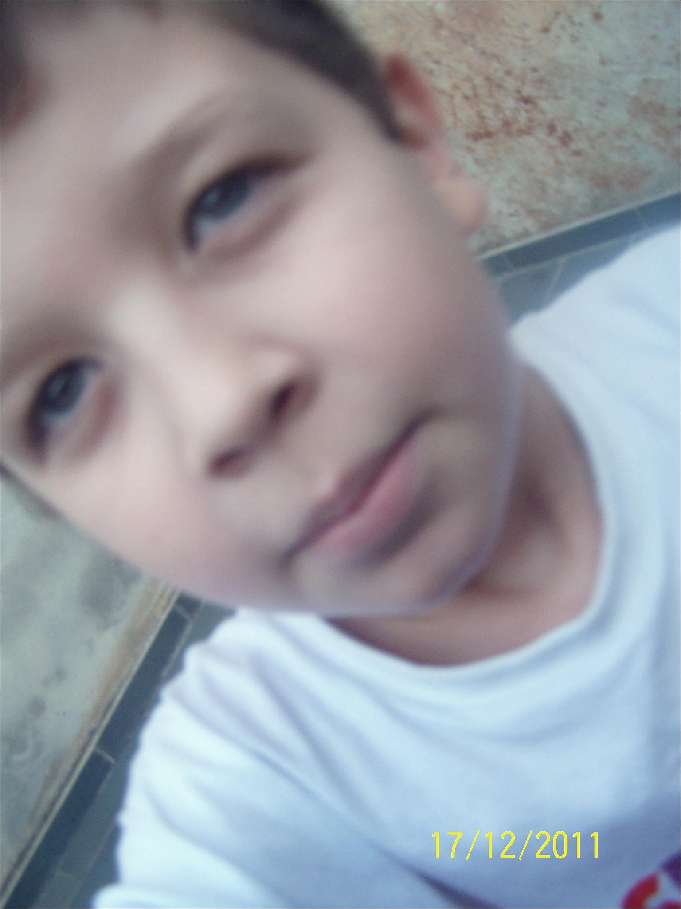
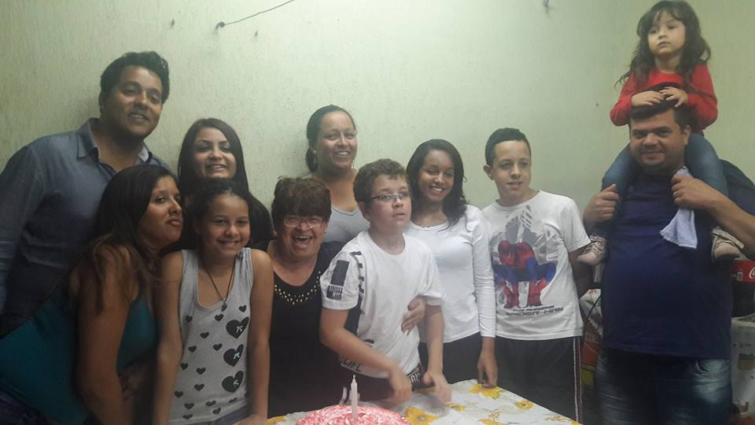

Entre 6 até 10 fui estuda no colegio Fidens, uma escola "particula" onde me fizeram fazer um ano retrasado. Eu era uma criança muito encrenqueira, mas tinha muitos amigos que com o passar do tempo sairam da escola, mas mantia contato. Sobre os meus pais, pra mim eles mudaram nada, continuam sendo meus velhos que amo no fundo do meu coração.
   